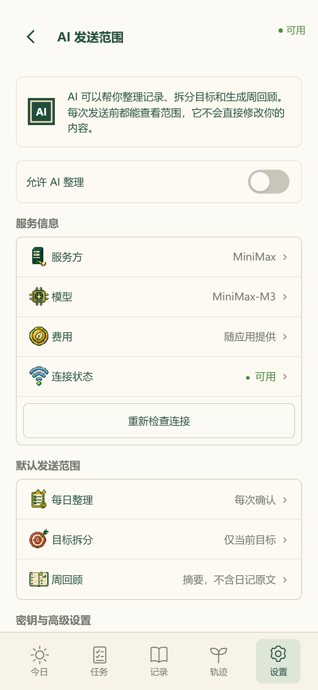

可调整候选 · 多页共用一套尺寸
当前 App 尺寸 · 不随参数变化
只确认公共组件，不再逐页调尺寸
建议顺序：字体 → 列表 → 标题与分组间距 → 按钮和表单。最后导出参数文件发给我；不用再逐页报像素。
向下滚动预览可查看列表、标题栏、按钮、分段、表单和提示。确认字是否舒服、密度是否合适、操作是否清楚即可。
“页面标题到正文”统一从标题栏下沿开始计算；“分组标题到列表”控制正文内的小标题间隔。预览下方会显示实际测量值。
所有预览共用标题与分组布局；任务、设置和组件样板使用公共渲染器，其余为真实页面只读快照。调整保存在本浏览器，不自动覆盖 App；确认后点击“导出参数”。
可调整模板清单
| 模板 | 调什么 | 在哪里看 / 边界 |
|---|---|---|
| 页面壳 / 标题栏 | 左右边距、标题字号、标题到正文 | 统一组件；一级/二级壳共用规则。确认弹层需回正式页面复核 |
| 四级文字 | 页面标题、组件标题、正文、辅助信息；标题/正文粗细 | 统一组件底部的文字与正文样板；控件用正文大小、500字重 |
| 内容分组 | 分组之间、分组标题到内容 | 设置分组；与页面标题到正文是两项不同参数 |
| 统一列表 | 最低高度、内边距、圆角、行内距离、计数到 +1、操作列宽 | 任务 / 习惯 / 已完成；只读、导航、操作、控件是同一几何的不同用途 |
| 按钮 / 分段 | 可见高度、点击高度 | 统一组件；最低触控 44px，不能靠压缩触控区域变小 |
| 表单 / 正文 | 标签到输入框、字段之间、多行高度 | 统一组件；“正文”为组件标题，小字段标签仍用正文级 |
| 容器 / 提示 | 圆角、内部文字；内边距暂固定公共令牌 | 统一组件；没有独立颜色、边框宽度或内边距滑块 |
| 特殊内容 | 复盘高度、重复日期间距、热力图方格/间距/列表宽 | 对应真实页面快照；只调整视觉，不执行任务、保存记录或发送 AI |
全部参数与基准数值（31 项）
| 分类 | 参数 | 基准 | 导出键 |
|---|
查看原来的 32 截图
历史参照，只沿用分组结构；不是当前 App 的截图。
